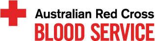

One in three people will need blood in their lifetime, and the Australian Red Cross Blood Service works to meet this lifesaving need for millions of Australians.
The Blood Service collects, processes and distributes blood products, along with contributing expert support for transplantations and other clinical services, and conducting world-class research.
2014/2015 was the first year under the new five-year strategic plan for our Blood Service, which aligns our activities with our ambition to be among the world’s best blood services, offering quality product, service delivery, business performance and safety.
Joe works as a paramedic, studies medicine and loves surfing. He donates platelets regularly because he sees first-hand how blood saves lives.
Australian Red Cross Blood Service
During the year we collected and supplied 1.4 million life-saving blood donations. We also improved efficiencies in blood management and manufacturing, enhanced the blood donation experience for our donors and met our targets for providing whole blood and plasma to Australia, supplying 668,553 units of red blood cells and 572 tonnes of plasma.
We continued to match our collection and supply of blood products closely to the actual demand for blood, achieving our best ever match of red cell inventory to patient demand on record. As a result, we spent 330 days of the year within our inventory sufficiency bands – that is, the level at which we have enough blood to comfortably meet demand without having too much and causing unnecessary wastage.
Our Blood Service is fully funded by Australian governments, and this year we again exceeded targets set for us under the government funding agreement. Each year we are permitted to retain up to $5 million of surplus income under our main operating program, with the remaining balance to be returned to governments. The amount of the government grant refundable in 2014/2015 was $28.2 million.
This significant surplus reflects our focus on efficiency and productivity in 2014 and 2015. For example, we improved our productivity in blood testing and processing by 46% and 14% respectively compared to last year.
We know that keeping our voluntary blood donors happy is key to ensuring that we can collect enough blood into the future. We reduced the average waiting time for our donors and we’ve improved how we collect their feedback through our national call centre. These changes helped us to surpass our donor satisfaction target of 90%.
About one third of donated blood goes to cancer patients like Roseanne, who needed blood products when she was fighting leukaemia. She’s now in remission and is studying photography.
Australian Red Cross Blood Service
One challenge the Blood Service has faced for the past few years, and will continue to face into the future, is the declining demand for red cells in Australia. Although this is essentially a good thing as it reflects more efficient use of red cells by health providers, it also requires us to constantly adjust the way we approach and work with volunteer donors, particularly as demand for plasma is steadily increasing while red cell demand declines.
This year we continued with a number of initiatives to address this challenge, including helping our donors to be flexible in the kind of blood products they donate.
One in three Australians will need blood, but only one in 30 donates.
Call 13 14 95 or visit donateblood.com.au to save lives.
View the Australian Red Cross Blood Service annual report at donateblood.com.au/corporate/publications/annual-report.